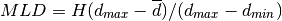
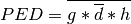

Stratification : comparaisons en eaux peu profondes¶
Introduction¶
Nous désirons comparer la profondeur de la couche mélangée (MLD), le déficit en énergie potentielle (PED) et l’hydrologie (température ou salinité) de trois manières différentes :
- Tracé des observations (points) sur fond 2D grillés de champs de modèles moyennés sur la période choisie.
- Tracé des observations et des champs du modèles colocalisés avec les observations à l’aide d’un gros point (ou carré) pour le modèle et d’un point normal pour les observations.
- Tracé des observations sur un champ de points de modèles colocalisés aux observations et interpolé avec griddata (Natgrid) sur la grille du modèle. Il a été noté que cette méthode interpole spatialement entre des points correspondant à des données de dates différentes.
Calculs préalables¶
Nous faisons l’hypothèse que nous avons à notre disposition la température, la salinité et la profondeur sous la forme de tableaux de profils.
Dans le cas des données in-situ, nous avons par exemple :
temp = MV2.array(ndep, nprof)
sal = MV2.array(ndep, nprof)
deps = MV2.array(ndep, nprof)
lats = N.array(nprof)
lons = N.array(nprof)
Note
Les profils in-situ ne sont pas renseignés entièrement dans ces tableaux 2D :
ndep est ici le nombre de niveaux verticaux maximal sur l’ensemble des profils.
Les tableaux temp, sal et deps sont ainsi supposés masqués.
Dans le cas des sorties de modèle sur la grille d’origine (instantanées ou moyénées dans le temps) :
temp = MV2.array(ndep, nlat, nlon)
sal = MV2.array(ndep, nlat, nlon)
deps = MV2.array(ndep, nlat, nlon)
lats = temp.getLatitude()[:]
lons = temp.getLongitude()[:]
Note
Le tableau des profondeurs est supposé de même dimension que ceux de la température et la salinité (cas générique).
Il convient d’abord de récupérer la densité grâce aux formules de l’UNESCO :
import seawater
# Pression
pres = seawater.csiro.pres(deps, N.resize(lats, deps.shape))
# Densité
dens = seawater.csiro.dens(sal, temp, pres)
Il nous faut ensuite l’épaisseur associée à chaque pronfondeur en chaque point. Pour le cas des profils in-situ :
# Indice de profondeur max
kmax = (~temp.mask).sum(axis=0)-1
# Épaisseur de base
from vacumm.misc.grid import meshweights
ddeps = meshweights(deps, axis=0)
# Épaisseur du dernier niveau
for ip, k in N.ndenumerate(kmax):
ddeps[k, ip] = N.diff(deps, axis=0)[k-1, ip]
Pour les sorties de modèle :
ddeps = meshweights(deps, axis=0)
Récupération des sorties du modèles¶
Champs grillés¶
Les calculs sur champs grillés ne sont nécessaires que pour le premier graphique.
Sachant que les profils peuvent couvrir une période temporelle importante,
rendant difficile la lecture et la manipulation de de sorties 4D du
modèle, il est fortement conseillé d’effectuer les calculs
en découpant en périodes de temps pas trop longues (utilisation
de Intervals par exemple),
puis en concatenant les résultats.
Colocalisation¶
Pour les graphiques 2. et 3., il est nécessaire de colocaliser le modèle avec les observations. Une fois cette colocalisation effectuées, les calculs se font exactement de la même manière pour le modèle et les données in-situ.
La méthodologie consiste à boucler sur tous les profils (de préférence par ordre de temps), puis à interpoler dans le temps et l’espace horizontal.
On commence par initialiser les tableaux interpolés :
temp_mars = MV2.zeros((ndep_mars, nprof))+MV2.masked
temp_mars.setAxis(1, temp_obs.getAxis(1))
sal_mod = temp_mod.clone()
deps_mod = temp_mod.clone()
On définit les marges de lecture spatiale du modèle, afin de lire des mini-blocs autour des profils (voir Bourrelet d’eau froide) :
mars = MARS3D(cfg, dates)
grid = mars.get_grid()
from vacumm.misc.grid import resol
xres, yres = resol(grid)
On boucle ensuite sur les dates des profils (par exemple une liste
au format cdtime.comptime).
Cette boucle temporelle est plus complexe que pour un simple fichier,
car nous traitons le général (sortie de prévisions) à l’aide d’un lecteur :
# On définit une marge de temps pour la recherche des fichiers
# (fonction de la fréquence des sorties)
dtmax = (1, 'day')
# Autres inits
from vacumm.misc.atime import add as add_time
old_date_interval = None
import cdms2
cdms2.setAutoBounds(1)
# Boucle temporelle
for ip, date in enumerate(dates):
# Limites spatiales
lon = lons_obs[ip]
lat = lats_obs[ip]
lon_min = lon-2*xres
lon_max = lon+2*xres
lat_min = lat-2*yres
lat_max = lat+2*yres
# Vérification de l'ancien lecteur
if old_date_interval is None or \
date < old_date_interval[0] or \
date > old_date_interval[1] :
# Interval de temps
date_interval = (add_time(date, -dtmax[0], ctmax[1]),
add_time(date, dtmax[0], ctmax[1]))
# Initialisation du lecteur
try:
mars = MARS3D(cfg, date_interval,
lon=(lon_min, lon_max), lat=(lat_min, lat_max))
except:
continue
# Récupération des indices des deux pas de temps utiles
mtime = mars.get_time()
mctime = mtime.asComponentTime()
mrtime = mtime.asRelativeTime()
ijk = mctime.mapIntervalExt((date, date), 'ccb')
if ijk is None: continue
i, j, k = ijk
if mctime[i]>date: i -= 1
Il est alors possible de lire les données les plus proches (pas d’interpolation) :
select = dict(time=(date, date, 'ccb'),
lon=(lon, lon, 'ccb'),
lat=(lat, lat, 'ccb'), squuze=1)
temp_mars[:, ip] = mars.load_temp()(**select)
sal_mars[:, ip] = mars.load_sal()(**select)
deps_mars[:, ip] = mars.deps_temp()(**select)
S’il convient de faire une colocalisation par interpolation linéaire :
# Lectures
temp_mars_xyzt = mars.load_temp()[i:i+2]
sal_mars_xyzt = mars.load_sal()[i:i+2]
dens_mars_xyzt = mars.load_dens()[i:i+2]
# Interpolations temporelles
dt0 = date.torel(mtime.units).value-mrtime[i].value
dt1 = mrtime[i+1].value-date.torel(mtime.units).value
f0 = d0/(d0+d1)
f1 = d1/(d0+d1)
temp_mars_xyz = f0*temp_mars_xyzt[0]+f1*temp_mars_xyzt[1]
sal_mars_xyz = f0*sal_mars_xyzt[0]+f1*sal_mars_xyzt[1]
deps_mars_xyz = f0*deps_mars_xyzt[0]+f1*deps_mars_xyzt[1]
# Interpolations spatiales
from vacumm.misc.grid.regridding import grid2xy
temp_mars[:, ip] = grid2xy(temp_mars_xyz, N.array([lon]), N.array([lat]))
sal_mars[:, ip] = grid2xy(sal_mars_xyz, N.array([lon]), N.array([lat]))
dens_mars[:, ip] = grid2xy(dens_mars_xyz, N.array([lon]), N.array([lat]))
Note
On suppose l’existance de la méthode MARS3D.get_time().
Celle-ci peut s’implémenter facilement et propremement en
ajoutant la possibilité d’afiner la sélection lors de
la lecture d’une d’une variable ayant un axe de temps.
On peut alors la lire avec une sélection spatiale
afinée avec des slice(0,1) afin de la rendre plus légère,
puis en récupérant l’axe de temps :
time = self.load_temp(lon=slice(0,1), lat=slice(0,1),
level=slice(0,1)).getTime()
On pourrait aussi définir les méthode get_ctime()
et get_rtime() pour avoir facilement les temps
cdtime.comptime et cdtime.reltime
associés.
Calcul de la pronfondeur de couche mélangée¶
Ce calcul fait l’hypothèse d’une structure océanique bi-couche en densité. La profondeur de la couche mélangée est ainsi exprimée comme suit :

où H est la profondeur maximale and d la densité, et où le surlignage siginifie une moyenne verticale.
Ce qui se traduit par :
# Densité min/max
dmin = dens.min(axis=0)
dmax = dens.max(axis=0)
# Densité moyenne
dmean = N.ma.average(dens, axis=0, weights=ddeps)
# Profondeur max (max+demi épaisseur)
H = deps[-1]+ddeps[-1]*.5
# MLD
mld = H*(dmax-dm)/(dmax-dmin)
mld.units = 'm'
mld.long_name = u'Profondeur de la couche de mélange'
Calcul du déficit en énergie potentielle¶
On utilise la formule suivante :

où g est la gravité et h la profondeur.
Ce qui ce code comme suit :
# Densité moyenne
dmean = MV2.average(dens, axis=0, weights=ddeps)
# Anomalie de densité
danom = dens-dmean
# Énergie potentielle disponible
from vacumm.misc.phys.constants import g
ape = danom * g
ape *= ddeps
# Deficit
ped = MV2.average(ape, axis=0, weights=ddeps)
ped.units = 'J.m^{-2}'
ped.long_name = u"Definit d'énergie potentielle"
Calcul de l’hydrologie à une profondeur donnée¶
Il s’agit d’interpoler verticalement les profils in-situ et du modèle (colocalisés aux observations ou non) :
# Profondeur cible
dep = -60
# Axe pour interpolation
from vacumm.misc.axes import create_dep
depaxis = create_dep([dep])
# Interpolations
from vacumm.misc.grid.regridding import interp1d
ztemp_obs = interp1d(temp_obs, depaxis, xmap=-1, deps_obs)
zsal_obs = interp1d(sal_obs, depaxis, xmap=-1, deps_obs)
ztemp_mars = interp1d(temp_mars, depaxis, xmap=-1, deps_mars)
zsal_mars = interp1d(sal_mars, depaxis, xmap=-1, deps_mars)
Représentation graphiques¶
Observations sur fond de modèle grillé
On prend la MLD comme exemple :
# Tailles (pour info)
nlat_mars, nlon_mars = mld_mars.shape
nprof = mld_obs.shape
# Calcul des min et max initiaux
vmin = min(mld_mars.min(), mld_obs.min())
vmax = min(mld_mars.max(), mld_obs.max())
cmap = 'magic'
# On trace de champ du modèle moyené sur la période choisie
# (note : mld_mars(nlon_mars, nlat_mars) )
from vacumm.misc.plot import map2
m = map2(mld_mars, show=False, vmin=vmin, vmax=vmax, cmap=cmap)
# On trace les observations sous forme de points
# (note : mld_mars(ndep_obs) )
m.map.scatter(lons_obs, lats_obs, s=20, c=mld_obs,
vmin=m.vmin, vmax=m.vmax, cmap=m.cmap)
Observations et modèle colocalisés sous forme de points
# Tailles (pour info)
nprof = mld_mars.shape
nprof = mld_obs.shape
# Récupération des niveaux
vmin = min(mld_mars.min(), mld_obs.min())
vmax = min(mld_mars.max(), mld_obs.max())
from vacumm.misc import auto_scale
levels = auto_scale((vmin, vmax))
vmin = levels[0]
vmax = levels[-1]
# Création de la palette
from vacumm.misc.color import cmap_magic
cmap = cmap_magic(levels)
# On trace de champ du modèle moyené sur la période choisie
from vacumm.misc.plot import map2
m = map2(lon=(lon_min, lon_max), lat=(lat_min, lat_max), show=False)
# On trace le modèle en fond
mod = m.map.scatter(lons_mars, lats_mars, s=50, c=mld_mars,
vmin=vmin, vmax=vmax, cmap=cmap)
# On trace les observations avec des points plus petits
m.map.scatter(lons_obs, lats_obs, s=20, c=mld_obs,
vmin=m.vmin, vmax=m.vmax, cmap=m.cmap)
# Colorbar
from matplotlib.pyplot import colorbar
colorbar(mod, label='$%s$'%mld_mars.units)
Observations sur fond de modèle colocalisé puis interpolé spatialement par triangulation
Le début se base sur l’exemple précédent :
# Tailles (pour info)
nprof = mld_mars.shape
nprof = mld_obs.shape
# [...]
# Triangulation du modèle
import matplotlib.tri as tri
triang = tri.Triangulation(lons_mars, lats_mars)
# On trace le modèle en fond
mod = m.axes.tripcolor(triang, mld_mars,
vmin=vmin, vmax=vmax, cmap=cmap)
# On ajout les points observés
m.map.scatter(lons_obs, lats_obs, s=20, c=mld_obs,
vmin=m.vmin, vmax=m.vmax, cmap=m.cmap)
# Colorbar
from matplotlib.pyplot import colorbar
colorbar(mod, label='$%s$'%mld_mars.units)